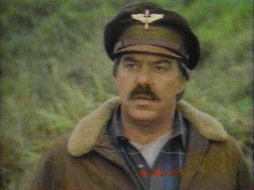

|
Navn: Jack Dalton Foreldre: ukjent |
 |
Rollen Jack Dalton ble spilt av Bruce McGill. Faren hans døde bare 4 uker før Jack ble født. Moren ble svært opprørt etter denne hendelsen, hun innså at hun var på randen av å bryte ned og bestemte derfor å adoptere bort sønnen sin.
Dalton ble først kjent med MacGyver på videregående, de reiste også til Europa sammen. Til tross for at Dalton alltid skaper problemer for MacGyver, er han en av hans beste venner.
Dalton bosatte seg i California, hvor han startet en liten taxi bedrift. Senere startet han et privat flyselskap. Han hadde flere mislykkede forretningsideer, men han er fortsatt optimistisk om at han en dag vil lykkes i arbeidslivet.
I begynnelsen visste ikke Jack noe om foreldrene sine, men senere i serien blir det vist at Jack finner moren sin og oppdager grunnen for at han ble adoptert bort.
i: Du er nå på Jack Dalton siden
Karakter meny:
| MacGyver | |
| Jack Dalton | |
| Harry Jackson | |
| Murdoc | |
| Pete Thornton |